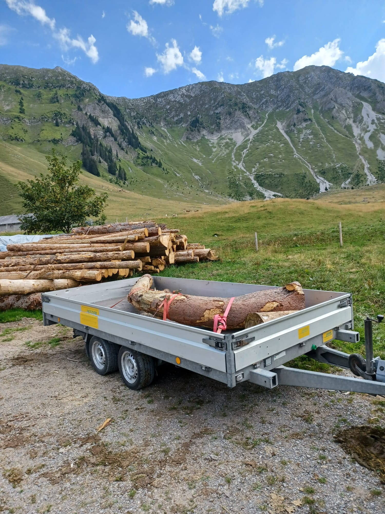
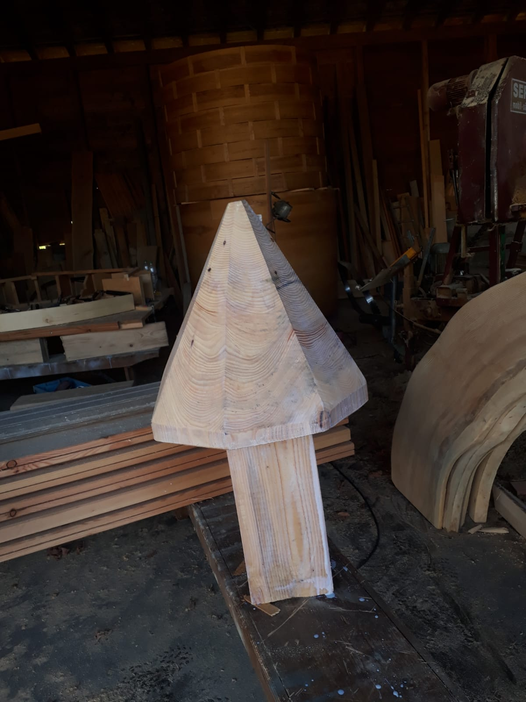
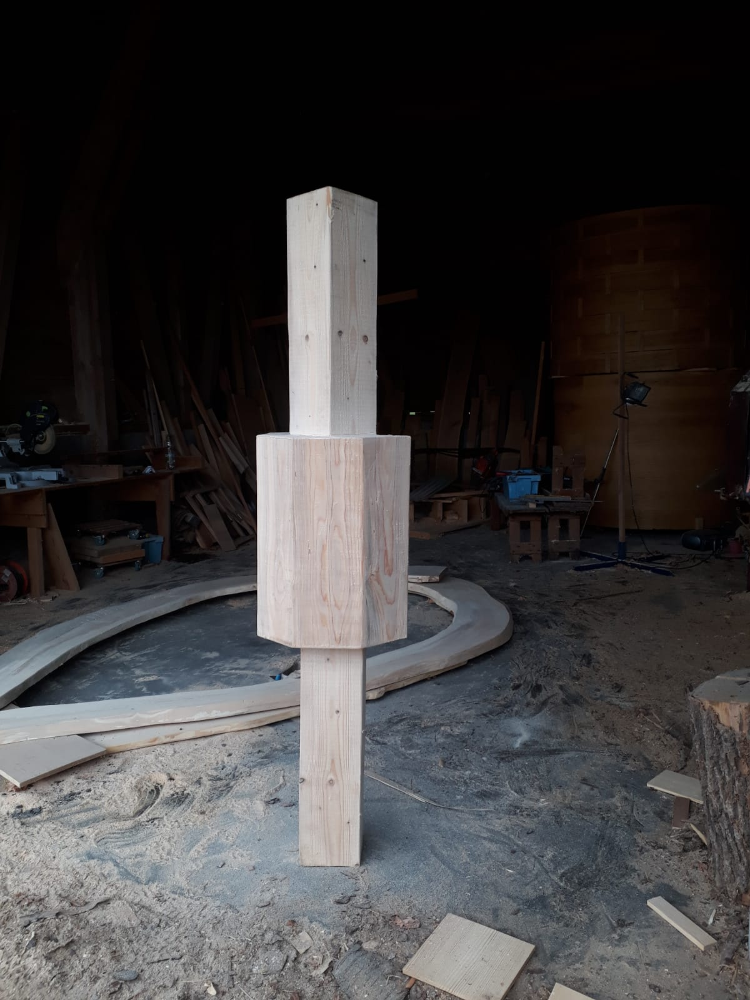
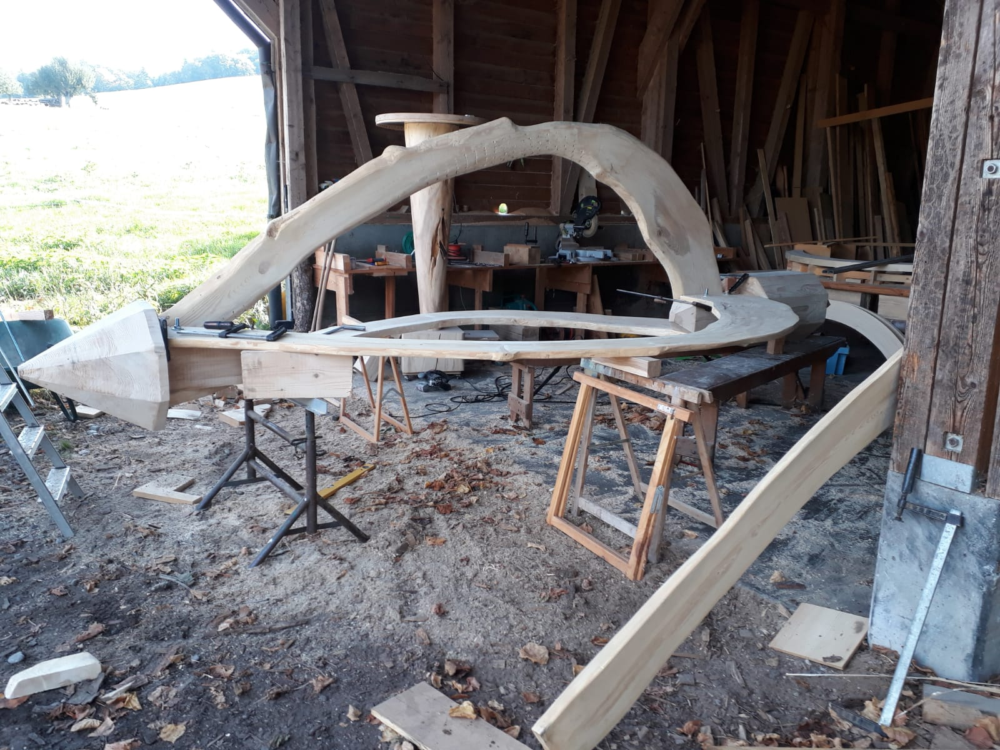

Kerze mit Baum
Ausgestellt im Park des Hotel Restaurant Schloss Ueberstorf.
Für einmal trägt nicht der Baum die Kerze, sondern umgekehrt die Kerze den Baum.
Die im Bogen gewachsenen Bretter stammen von einem Baum, der sich unter widrigen und rauhen Bedingungen auf der Alp Riggisberg über Jahrzehnte am Leben gehalten hat. Riggisalp (Schwarzsee)
  